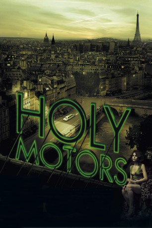

#7493 Holy Motors
 gesehen am 15.11.2017
gesehen am 15.11.2017
 
 IMDB-Wertung: 7.1 / 10
IMDB-Wertung: 7.1 / 10  Tomatometer: 91
Tomatometer: 91  Metascore: 0
Metascore: 0 
Vom Sonnenaufgang bis tief in die Nacht: einige Stunden im Leben von Monsieur Oscar, einer schattenhafte Existenz, die von einem Leben ins nächste schweift. Mal ist er ein Industriekapitän, mal ein Killer, ein Bettler, ein Monster oder ein treusorgender Familienvater. Er ist alleine, nur Céline begleitet ihn, die große Blonde hinter dem Steuer der riesigen Stretchlimousine, die ihn durch Paris und in die Vororte kutschiert. Wie einen Profikiller, der von Auftrag zu Auftrag eilt.
Jahr: 2012
Dauer: 115 Minuten
FSK: 16
Land: Frankreich Studio: Arsenal FilmverleihTonspuren:
Untertitel:
Auflösung: 1080p (1920x1040) Größe: 8069 MB
Genre: Drama, Fantasy
Regisseur: Leos Carax
Drehbuch: Leos Carax
Soundtrack:
Darsteller:
 Denis Lavant als Mr. Oscar / Le Banquier / La Mendiante / L'O.S de la Motion Capture / M. Merde / Le Père / L'Accordéoniste / Le Tueur / Le Tué / Le Mourant / L'Homme au Foyer
Denis Lavant als Mr. Oscar / Le Banquier / La Mendiante / L'O.S de la Motion Capture / M. Merde / Le Père / L'Accordéoniste / Le Tueur / Le Tué / Le Mourant / L'Homme au Foyer Edith Scob als Céline
Edith Scob als Céline Eva Mendes als Kay M
Eva Mendes als Kay M Kylie Minogue als Eva Grace, Jean
Kylie Minogue als Eva Grace, Jean- Elise Lhomeau als Léa, Élise
 Michel Piccoli als L'Homme à la tache de vin
Michel Piccoli als L'Homme à la tache de vin- Leos Carax als Le Dormeur / Voix Limousine
- Annabelle Dexter-Jones als L'assistante photographe
- Camille Rutherford als Voix Limousine
- Katarzyna Glinka als
- François Rimbau als Homme aveugle , uncredited
- Jeanne Disson als Angèle
- Nastya Golubeva Carax als La Petite Fille
- Reda Oumouzoune als L'Acrobate Mocap
- Zlata als La Cyber-Femme
- Geoffrey Carey als Le Photographe / Voix Limousine
- Elise Caron als
- Corinne Yam als
- Julien Prévost als
- Ahcène Nini als
- Laurent Lacotte als Voix Limousine
- David Stanley Phillips als Voix Limousine
- Matthew Gledhill als
- Hanako Danjo als
- Big John als
- Pierre Marcoux als
- Bastien Bernini als
- Elliot Simon als Musicien de l'église
- Quentin Auvray als Musicien de l'église
- Doctor L. als Musicien de l'église
- Bertrand Cantat als Musicien de l'église
- Alexandre Leitao als Musicien de l'église
- David Nzavotunga Kiala als Musicien de l'église
- Johann Riche als Musicien de l'église
- Clément Robin als Musicien de l'église
- Yao Dembele als Musicien de l'église
- Yves Abadi als Musicien de l'église
- Miguel Saboga als Musicien de l'église
- Grégoire Simon als Musicien de l'église
- Viviane Arnoux als Musicienne de l'église
- Hugo Boulesteix als Musicien de l'église
- Eloi Miehe als Musicien de l'église
- Michel Delahaye als Voix Limousine
- Leslie Palanker als Voix Limousine
- Adrien Guitton als Voix Limousine
- Johanna Nizard als Voix Limousine
- Kester Lovelace als Voix Limousine
- Sonia Brahim als Doublure
- Aurélia Jurca als Doublure
- William Blair als Doublure
Datei: X:\2012(G-M)\Holy Motors (2012, FSK16, 1920x1040).mkv seit 15.11.2017
Festplatte: HD 2012(A-M)
 Es gibt insgesamt 112 Filme in der Gruppe '2012(G-M)'
Es gibt insgesamt 112 Filme in der Gruppe '2012(G-M)'